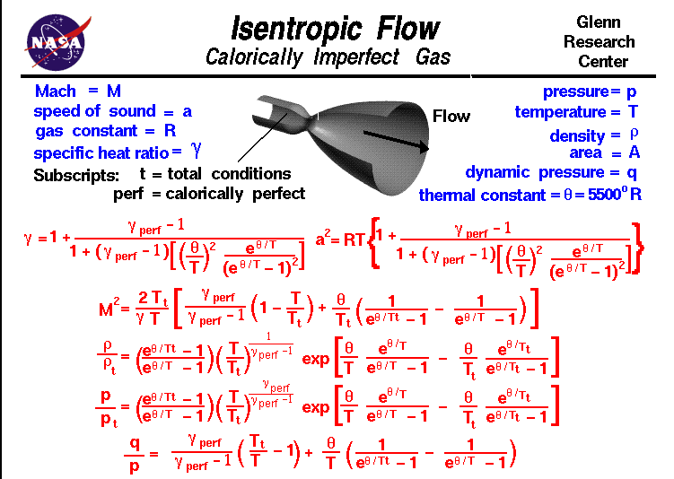

Thermodynamics - Part2
Kinetic Theory
Gases can be studiey by considering the small scale action of individual molecules. The kinetic theory of gases assumes that the molecules are very small relative to the distance between molecules. The molecules are in constant, random motion and frequently collide with each other and the will walls of any container.
The individual molecules possess the standard physical properties of mass, momentum, and energy. Each is related to a macro state variable.

For an ideal gas, or monatomic gases (He, Ne...) The avg. kinetic energy associated with the motion in any particular direction is 0.5*k*T. The three independant directions (x,y,z) make the entire avg. kinetic energy: 3/2 * k * T. We also called these independant directions as degrees of freedom. For other gases that are composed of multiple atoms (N2,O2,H20...), they have more degrees of freedom, so the entire kinetic energy can be expressed as: the sum of the kinetic energy of C.M. motion + the kinetic energy of the 'internal motions', which can be approximated by the sum of rotational kinetic energy and vibrational kinetic energy. Thus, the entire avg. kinetic energy of r-atom molecule is: r *3/2 * k * T, where 3/2 * k * T is the kinetic energy of the C.M. motion of the entire molucule, and the rest 3/2*(r-1)*k*T is internal vibrational and rotational kinetic energy.
From Netwon's Law, we can also derive the relation of pressue and avg. kinetic energy: P*V = N * (2/3) * <0.5*m*v^2>. For a monatomic gas, we will suppose that the total internal energy U = N * <0.5*m*v^2>, because we are disregarding any possibility of excitation or motion inside the atoms themselves. Then, in these circumstances, we would have: P*V = 2/3*Ui or P*V = (gamma-1)*U. If we slowly compress this gas (quasi-static) in an ideal condition (frinctionless), and make sure that all the work done goes into changing the interal energy (adiabatic process), then we get the law: P * V^(gamma) = Constant.
Although there is always a random component of molecular motion. The entire fluid can be made to move as well in an ordered motion, (flow). We measure the pressure produced by the random motion as the static pressure. The pressure produced by the ordered motion is called dynamic pressure. And the sum is called total pressure.
Isentropic process
Isentropic process is a process that change of entropy is zero. One of a typical isentropic processes is adiabatic reversible process. (The processes of b to c, d to a in Carnot Cycle). Why? If it is a reversible process, there is no additional heat 'generated' by the friction. If it is an adiabatic process, there is no heat added or released. Therefore, delta Q = 0, and delta Q / T = delta S. So delta S = 0. The equation: P*V^(gamma) = Constant is derived under the condition of adiabatic reversible process, so it is actually an equation of isentropic process.
Isentropic flows occur when the change in flow variables is small and gradual. For example, the ideal flow through the nozzle. The generation of sound waves. And a supersonic flow that is turned while the flow area increases. If a supersonic flow is turned abruptly and the flow area decreases, shock waves are generated and the flow is irreversible. The isentropic relations are no longer valid and the flow is governed by the oblique or normal shock relations.
During an isentropic process, the state of the thermodyamic variables of a gas can changed based on the isentropic eqautions, for example P*V^(gamma) = Constant. Isentropic equations can be divided into two groups. One for calorically perfect, where specific heat capacity remains constant. And the other for calorically imperfect, where specific heat capacity changes.


Real Gas Effects
Let's examine the real gas effects that occur as the Mach number of the flow increases. Air is a mixture of gases with the major components being diatomic nitrogen and diatomic oxygen. For very low Mach numbers, the density of the air is a constant. But as the Mach number increases into the supersonic regime, some of the energy associated with the motion of the object compresses the gas and changes the density from its static value. Compressibility effects, such as shock waves, are present in supersonic airflows.
As the Mach number increases into the low hypersonic regime, some of the energy of the flow excites the vibrational modes of the diatomic molecules. Both the nitrogen and the oxygen experience vibrational excitation. There are 'mathematical models' determined from statistical mechanics and the kinetic theory of gases that account for this effect on isentropic flows, oblique, and normal shocks. In all of these cases, the excitation of the vibrational modes cause the specific heat capacity to become a function of temperature and no longer a single constant value. The value of the total temperature of the flow is less for a calorically imperfect gas than for a perfect gas since some of the kinetic energy of the flow is converted to vibrational energy.
As the Mach and temperature are further increased, some of the energy of the flow goes into breaking the molecular bonds holding the diatomic nitrogen and oxygen. We then have a mixture of dissociated atomic nitrogen and oxygen which is both calorically imperfect and thermally imperfect. A gas that follows the ideal equation of state is said to be thermally perfect and a gas that does not follow the ideal equation of state is thermally imperfect.
With even more speed and temperature, some of the electrons surrounding the nitrogen and oxygen atoms are stripped free to produce a mixture of ionized nitrogen, oxygen, and free electrons. The resulting plasma can conduct an electric current and is influenced by electro-magnetic forces.
An Alternative expression of Entropy
In the Part1, we proved that entropy is a state variable using Carnot Cycle with the expression of delta S = Q/T. However, is there an alternative expression for entropy that only depends on state variables other than heat (Q)? Let's assume we have N molecules of gas in a box with volume V. Suppose each molecule has X number of different states. They can have mulitple locations within the volume V, and multiple velocities. The sum of the states of the entire molecules is X^(N). Let's define a variable S = k*ln(X^N). Now let the gas "free expands" adiabatically to the Volume 2*V. Since it is a free expasion, so no work is done on/by the system. And because it is an adiabatic process, no heat added/released. From the First Law: delta U = Q - W, we get delta U = 0. So afterwards, each molecule has the same avg. kinetic energy (same Temperature). But because the volume increases to 2*V, each molecule has 2 times the locations to be, therefore each molecule has 2*X number of different states afterwards. And S2 = k*ln( (2*X)^N ). delta S = S2 - S1 = k*ln( (2*X)^N ) - k*ln(X^N). delta S = N*k* ln(2).
Now, let's calculate the change of entropy from the first expression: delta S = Q/T. Because it is a transient process (not quasi-static), we could not draw a clear path between state 1 and state 2. However, as we know that the entropy is a state variable, the change of entropy between two states shall not depends on which path it takes. And since we know that the temperature is constant through the free expansion, we can use an isothermal path to calculate delta S. From the First Law: delta U = Q - W. Because the temperature remains constant, delta U = 0 = Q - W. So Q = W = integral(P) *dV. Using the equation of state: P*V = R*T, P = RT/V. Work done is R*T*ln(V2/V1) = Q. delta S = R*ln(V2/V1), delta S = R*ln(2). We all know that R = N*k. So interestingly the result matches!
From this analysis, we get another expression of entropy from the microscale or statistical viewpoint: S = k * ln( total states). Entropy is an macro-expression of the number of different states of a system. It is indeed a state variable of a system.
Control Volume
Previously, we have been writing the laws for a system, a specific quantity of matter. More often, in propulsion and power problems, we are interested in what happens in a fixed volume. For a control volume, we are more interested in the rates of change.
Conservation of mass for a system says: dm_sys = 0. For a control volume, mass flow in and out the boundaries of the volume. So m_dot_CV = m_dot_in - m_dot_out.
Conservation of energy for a system says: dE = dQ - dW. For a control volume, fluid flows through the volume and carries energy in and out the boundaries of the volume. So E_dot_CV = Q_dot_CV - W_dot_CV + E_dot_in - E_dot_out. The fluid that enters and leaves has an amount of energy per unit mass: e = u + 0.5*c^2 + gz (we neglect chemical energy). In addtion the fluid that enteres and leaves must do/get work from the surrounding pressure. So W_dot_CV can be expressed as W_dot_mechanical + W_dot_flow. W_dot_flow = p_e * v_e * m_dot_e - p_i * v_i * m_dot_i. W_dot_mechanical is any work associated to mechanical operation, such as shaft work, piston work, or shear work. Combine the [flow work] and [energy flowing in and out] terms, we can get an equation as: E_dot_CV = Q_dot_CV - W_dot_mechanical + m_dot_i*(h_i + 0.5*c_i^2 + g*z_i) - m_dot_e*(h_e + 0.5*c_e^2 + g*z_e).
In a special case of steady flow: d/dt = 0, m_dot_i = m_dot_ei, and negleting potential energy, we get: Q_dot_CV - W_dot_mechanical = m_dot*(h_total_e - h_total_i), where h_total = h + 0.5*c^2. This is the form of 'Steady Flow Energy Equation (SFEE)'.
Frame dependence of Stagnation quantities
The stagnation temperature and stagnation pressure are the conditions the fluid would reach if it were brought to zero speed relative to some reference frame.
For example, consider a high speed reentry vehicle traveling through the still atmosphere, which is at temperature T. Let's place our reference frame on the vehicle and stagnate a fluid particle on the nose of the vehicle (carrying it along with the vehicle and thus essentially giving it kinetic energy). The stagnation temperature of the air in the vehicle frame is: T_total = T + 0.5*c^2/Cp, where c is the vehicle speed. The temperature the skin reaches (to first approximation) is the stagnation temperature and depends on the speed of the vehicle. Since re-entry vehicles travel fast, the skin temperature is much hotter than the atmospheric temperature. The atmospheric temperature, T, is not frame dependent, but the stagnation temperature, T, is.
Thus in our re-entry vehicle example, looking at the still atmosphere from the vehicle frame we see a stagnation temperature hotter than the atmospheric (static) temperature. If we look at the same still atmosphere from a stationary frame, the stagnation temperature is the same as the static temperature.